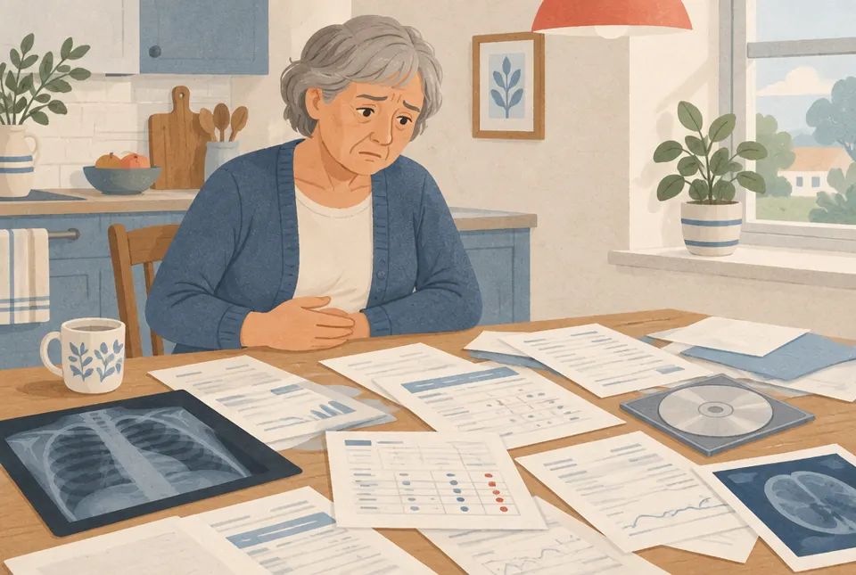
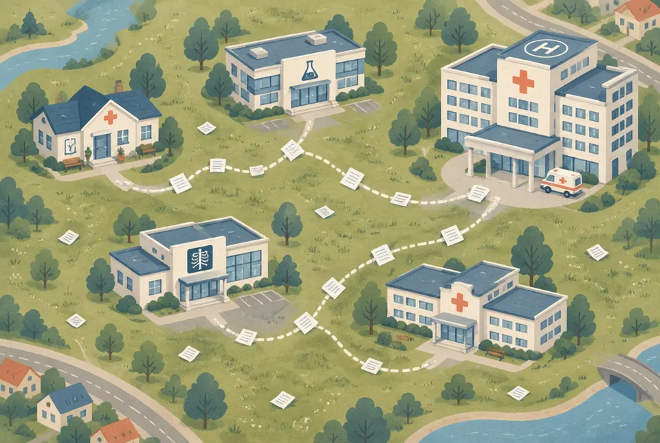
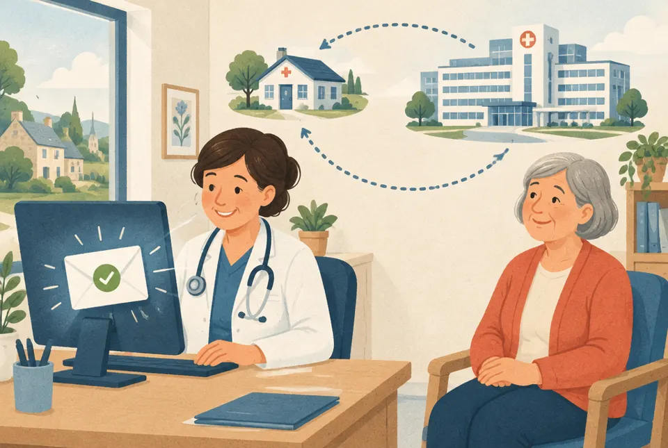

Čo sa deje, keď má niekto podozrenie na rakovinu, kde sa po ceste strácajú papiere a čo s tým za jednu noc postavíme. Vysvetlené tak, aby to pochopil aj desaťročný chalan.
Jednou vetou: správy o pacientovi sú rozhádzané po mnohých lekároch, koordinátor v nemocnici ich ručne naháňa, lekári na porade nemajú všetko včas a obvodný lekár sa nedozvie, ako sa rozhodlo. Pacient tak stráca dni pred liečbou.
Ku každému slovu je obyčajné prirovnanie. Keď sa v texte stratíš, vráť sa sem.
Pacient nejde jednou rovnou cestou. Prechádza cez 5 až 7 rôznych miest a každé má vlastné papiere. Medzi nimi stojí jedna osoba, ktorá to celé drží pokope: koordinátor. Pre neho staviame aplikáciu.

Toto je súťažný prípad, ktorý nám dala VZP: 13 správ z rôznych pracovísk. Alena je vymyslená, ale jej cesta je typická. Sleduj, kde sa stráca čas.
Od prvej návštevy u praktika po rozhodnutie lekárov: 50 dní
Pre porovnanie: pán Novák z prezentácie VZP to zvládol za 21 dní od príznaku po operáciu. To je ten dobrý prípad.
Bolí ju brucho, má teplotu a mierne žlté oči. Praktik pošle krv a moč do laboratória a nechá urobiť röntgen pľúc.
Dobre: rýchla reakciaPraktik si myslí, že ide o infekciu, a dá antibiotiká. Objedná ju ku gastroenterológovi.
Pokazilo sa: skutočná príčina sa zatiaľ nehľadáČakala 11 dní. Odborník zistí, že schudla 4 kg, a objedná ultrazvuk „na najbližší voľný termín“.
Pokazilo sa: 11 + 14 dní čakania na termínyRádiológ vidí 3,4 cm útvar, podozrivý z rakoviny. Správa ide ku gastroenterológovi, Alena s nálezom sama späť k praktikovi.
Pokazilo sa: papier ide inou cestou ako pacientkaNapíše žiadosť koordinátorovi. Ale výsledky vyšetrení v nej nie sú, len zoznam, kde sa dajú nájsť.
Pokazilo sa: koordinátor musí 6 správ naháňať sámV „domácom“ centre (KOC 2) nebol voľný termín, tak koordinátor objedná CT v inom centre (KOC 1).
Pozor: sú snímky z KOC 1 dostupné v KOC 2? Správa to nehovorí.Vzorka z pankreasu, kontrolné odbery, výsledok z mikroskopu. Potvrdí sa rakovina.
Pokazilo sa: histológia prišla o 2 dni neskôr, než sľúbiliLekári odporučia najprv chemoterapiu, potom možno operáciu. Ich podklad musí byť hotový a úplný práve k tomuto dňu.
Chýbalo: výkonnostný stav (ECOG) nikde nebolZákon hovorí, že praktik má dostať správu „bez zbytočného odkladu“. Ale neurčuje ako, a nikto nepotvrdzuje, že ju dostal.
Pokazilo sa: slučka sa neuzavriePredstav si štafetu, kde si bežci odovzdávajú kolík. Lenže tu má každý bežec iný kolík, niekto ho zabudne odovzdať a posledný bežec sa nikdy nedozvie, či tím vyhral. Koordinátor beží celý čas popri trati a zbiera spadnuté kolíky.
VZP v zadaní presne pomenovala tri miesta, kde sa veci strácajú. Naša aplikácia má zaplátať všetky tri.

Správy chodia neúplné a rôznymi kanálmi. Lekári prepisujú údaje, ktoré už niekde sú.
U Aleny: žiadosť z 2. 10. nemala ani jeden výsledok, len zoznam 5 pracovísk.
Koordinátor dohľadáva papiere namiesto koordinovania. Nikto nevidí, čo chýba a kto je na ťahu.
U Aleny: termíny CT, biopsie a odberov má koordinátor v hlave a v e-mailoch.
Praktik sa nedozvie, či centrum pacienta prijalo, čo chýba a ako lekári rozhodli.
U Aleny: záver z 21. 10. nemá žiadne potvrdenie, že ho praktik dostal.
Neexistuje jedna „diaľnica“ pre údaje pacienta. Informácie idú naraz mnohými cestičkami:
Správy sú často PDF alebo sken, ktorý počítač „nevie prečítať“. Ľudia preto údaje stále dookola prepisujú. A práve tu pomôže AI: vie čítať aj neusporiadaný text.
VZP chce funkčný prototyp, ktorý prevedie jeden prípad od odoslania až po spätnú väzbu bez straty informácií. Rozdelili sme to na 4 levely, presne podľa zadania. Pri každom je príklad z Aleny.
Praktik vyberie centrum a iba pretiahne správy, ktoré má. Žiadny nový dlhý formulár.
Praktička pretiahne svoju žiadosť z 2. 10. a klikne „Odoslať do KOC 2“. Koordinátor má prípad v jednom kroku.
Hotovo, keďkoordinátor dostane všetko o pacientovi naraz.
AI prečíta všetky správy a vyplní šablónu podklad pre konzílium (meno, diagnóza, lieky, alergie, vyšetrenia, laboratórium, histológia…). Pri každom údaji je doslovná veta zo zdroja. Čo chýba alebo si odporuje, je označené. Lekár skontroluje a potvrdí.
| Diagnóza | nádor hlavy pankreasu, 34 × 30 mm zdroj: správa 06, ultrazvuk |
| Lieky | apixaban (riedenie krvi) zdroj: správa 01, kardiológ |
| Výkonnostný stav (ECOG) | chýba nikde v 13 správach · vyžiadať |
| Posledná dávka apixabanu | „18. 10.“ pri výkone 12. 10. rozpor dátumov |
| Váha | 65 kg (15. 9.) 69 kg v júli, 63 kg až po konzíliu |
Hotovo, keďkoordinátor vidí lekárom potvrdený prehľad aj zoznam toho, čo chýba.
Nástenka koordinátora so stavmi nový / aktívny / odložený. Pri pacientovi je plán krokov v správnom poradí, každý s vlastníkom a termínom. Keď sa termín minie, aplikácia upozorní.
| CT (KOC 1) | 8. 10. hotovo |
| Biopsia | 12. 10. · endoskopia KOC 2 hotovo |
| Histológia | sľúbená do 15. 10., prišla 19. 10. meškala |
| Doplniť ECOG | na ťahu: onkologická ambulancia · do 20. 10. otvorené |
| Konzílium | 21. 10. naplánované |
Hotovo, keďje pri každom pacientovi vidno stav, termín a kto je na ťahu.
Po konzíliu aplikácia pošle záver praktikovi aj s pôvodným kontextom, revízny lekár poisťovne dostane informáciu automaticky. Prípad sa uzavrie, až keď je doručenie potvrdené.
22. 10.: „Záver konzília odoslaný MUDr. … (Dolní Břežany). Doručené ✓ Otvorené ✓“. Praktička vie, že Alena ide na chemoterapiu a čo má sledovať.
Hotovo, keďpraktik má výsledok aj s kontextom a odovzdanie je potvrdené.

Level 1: odovzdáš všetky papiere naraz. Level 2: šikovný pomocník ich prečíta a urobí z nich jeden ťahák, pri každej vete ukáže, z ktorej strany ju opísal. Level 3: na nástenke vidíš, kto má teraz loptu. Level 4: keď je zápas dohraný, výsledok dostane aj tréner, ktorý hráča poslal, a potvrdí „mám to“.
V 13 správach Aleny sú schválne aj omylom schované chyby. Bruno ich našiel 13. Dobrá aplikácia ich označí a nič si nedomyslí. Tu je 8 najdôležitejších:
Nie je v žiadnej správe. Lekári ho na porade potrebujú na výber liečby.
Aplikácia: „Chýba ECOG. Vyžiadať od onkologickej ambulancie.“
Výkon bol 12. 10., ale posledná dávka lieku na riedenie krvi je napísaná na 18. 10.
Aplikácia: „Dátumy si odporujú. Neopravujem, overte.“
Vzorka „odobraná 20. 10.“, ale správa je vydaná 19. 10.
Aplikácia: označí rozpor, nehádá.
Správy 12 a 13 (bolesť, psychológ) vznikli až po 21. 10. Do podkladu nepatria.
Aplikácia: ukáže ich zašednuté s poznámkou „po termíne konzília“.
69 kg v júli, 65 kg v septembri, 63 kg po konzíliu.
Aplikácia: použije 65 kg s dátumom a zdrojom.
Vysoké je CA 19-9, ale mierne zvýšené je aj CA 125. Vzorový záver spomína len prvé.
Aplikácia: dá do podkladu všetky hodnoty.
CT bolo v KOC 1, konzílium je v KOC 2. Nikto nepísal, či rádiológ snímky vidí.
Aplikácia: „Overiť dostupnosť snímok z KOC 1.“
Praktik sa pýta len „dokončiť diagnostiku a určiť postup“.
Aplikácia: navrhne doplniť konkrétnu otázku pre lekárov.
Alena má v správach poisťovňu „211“. To nie je VZP (VZP má kód 111). Aplikácia preto nesmie byť len pre VZP, musí fungovať pre každú poisťovňu.
Matej pracuje v radiačnej ochrane. Do podkladu pridáme jeden riadok, ktorý nikto iný mať nebude.
Zoznam CT, MR a PET, ktoré pacient už mal, kde sú a či ich rádiológ v centre vidí. Ak by sa malo rovnaké CT robiť znova príliš skoro, aplikácia upozorní. K tomu orientačná dávka žiarenia, jasne označená ako odhad.
Každé CT je dávka žiarenia, ako keby si stál dlho na slnku. Keď sa snímky stratia, robí sa CT znova a pacient dostane dávku navyše úplne zbytočne. Európske pravidlá (smernica Euratom 2013/59, čl. 55) hovoria, že pred vyšetrením treba zohnať predchádzajúce výsledky.
CT 8. 10. v KOC 1 → konzílium 21. 10. v KOC 2 → riadok: „Snímky CT z KOC 1: dostupnosť neoverená. Neobjednávať nové CT, vyžiadať cez ePACS.“
Všetky overené z oficiálnych zdrojov. Tieto môžeme použiť v prezentácii.
komplexných onkologických centier pre dospelých v ČR (+2 pre deti)
Zoznam MZ, február 2026odkedy musí mať každé centrum aspoň jedného koordinátora
Věstník MZ 11/2025platí poisťovňa nemocnici za jeden výkon koordinátora
MZ, 2. 9. 2026špeciálnych programov pre koordinátora. Pracuje v bežnom nemocničnom systéme, e-maile a telefóne.
MZ, zadanie VZPpacientov s rakovinou pľúc nezačne liečbu do 8 týždňov od CT
MZ ČR, 2. 9. 2026nových pacientov prejde konzíliom. Odporúča sa 80 %.
OECD / EK, profil ČR 2025nových prípadov rakoviny ročne v ČR (vrátane kožných), 27 050 úmrtí
ÚZIS, rok 2021vyšetrení išlo sieťou ePACS na zdieľanie snímok (rok 2018)
Applied Clinical Informatics 2020Komplexné centrá ani oficiálneho koordinátora tam zatiaľ nemajú. Štátny systém OnkoAsist mal skrátiť cestu k liečbe zo 160–185 dní na ~60 dní. Tender za takmer 11 mil. € od roku 2023 stále nie je dodaný. Problém je skutočný a štát ho nevie rýchlo vyriešiť.
„Když zaznamenají odchylku, informují pacienta a zajistí, že se dostane včas k lékaři.“Ivan Duškov, riaditeľ VZP, o koordinátoroch (apríl 2026). Presne to robí náš level 3.
„Smyslem je, že ušetří lékařům a sestrám čas na odbornou práci.“Ivan Duškov, riaditeľ VZP
VZP od októbra 2026 otvára na inovace.vzp.cz štvrťročnú výzvu pre digitálne nástroje v onkológii. Postup: pilot v 1–2 centrách s vopred danými cieľmi → dočasná úhrada na 12–24 mesiacov → trvalá úhrada alebo koniec.